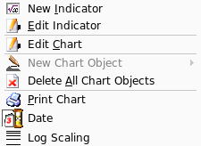

Chart Area
Description
Any indicator created will create it's own chart on the requested tab row. Right clicking with the mouse will bring up the chart pop up context menu.
Chart Pop Up Context Menu

- New Indicator
- Display the new indicator dialog.
- Edit Indicator
- Displays the edit indicator dialog where you may edit the settings of
the indicator.
- Edit Chart
- Displays the edit stock dialog where you canedit the chart
parameters and bar data.
- New Chart Object
- Display a list of chart objects to
create. NOTE: You can only create/modify objects if you are in draw
mode .
- Delete All Chart Objects
- Display a dialogue to delete all chart objects.
- Print Chart
- Brings up the print menu to print the
chart selected.
- Date
- Toggles the date display area of the chart.
- Log Scaling
- Toggles logarithmic scaling.